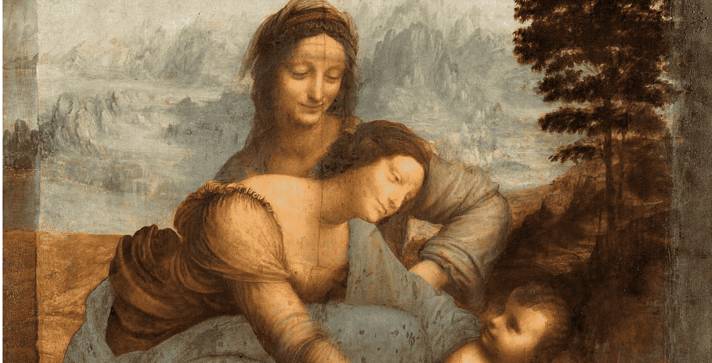

Lunes a Sábados
Domingos
Reconciliación: 20 minutos antes de cada misa
"Mi casa y yo serviremos al Señor"
Josue 24:11
Somos una Parroquia perteneciente a la Congregación del Santísimo Redentor (CSsR) ubicada en el umbral del Bañado Sur, en la zona ribereña de Asunción, Paraguay. Nuestro trabajo apostólico se centra en las familias como el núcleo principal de evangelización en la sociedad. Todos son bienvenidos a esta casa de oración para participar de nuestros servicios y sacramentos.